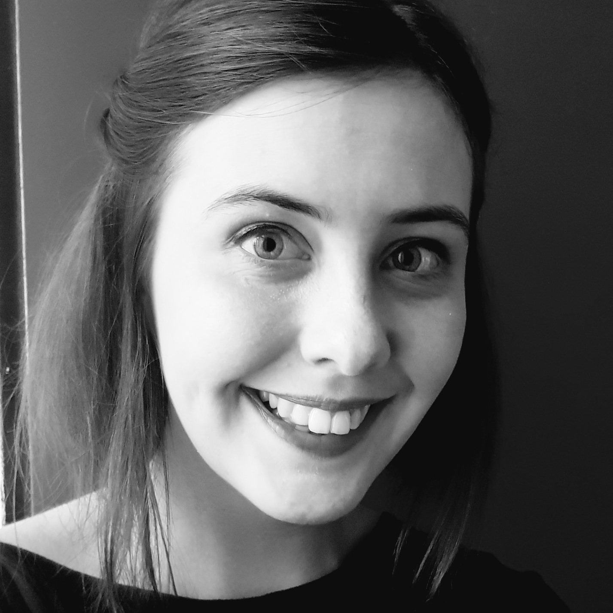
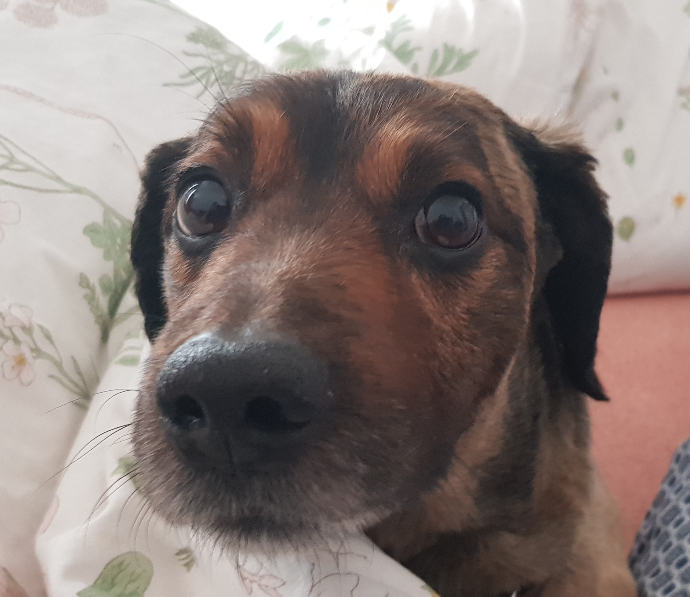

Vítejte na mé stránce! Jmenuji se Andrea a je mi 27 let. Bydlím v Brně a když nestuduji digitální akademii tak procházím jiné kurzy, které mě v životě posunují dále.
Momentálně se živím jako kuchařka v brněnském podniku Bistro Franz, ale mou největší zkušeností bylo pracovat v herním studiu s dalšími dvaceti lidmi na počítačové hře.
Ve volném čase hraji počítačové hry, scházím se s přáteli, nebo chodím na procházky se svým psem Estebanem. Ten se už moc těší, až se mu po digitální akademii začnu zase víc věnovat. :)
